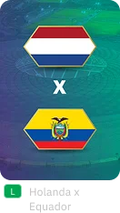

Sports Experience — Copa do Mundo 2022
Hub multiplataforma da DirecTV para a Copa do Mundo 2022, integrando mobile, web e TV em uma experiência única, com estatísticas em tempo real da FIFA e versões específicas para o Brasil e a América Latina.
Todos os dados e métricas apresentados nas imagens são fictícios, gerados apenas para fins de demonstração. Os mesmos não refletem informações reais da empresa ou de suas operações.
Resultados-chave
Tipo
Mobile, Web e TV
Ano
2022
Papel
Senior Product Designer
Cliente
DirecTV GO
01 · Overview
Overview
Hub multiplataforma da DirecTV para a Copa do Mundo 2022, com 2 versões regionais (Brasil e América Latina), 3 plataformas (mobile, web e TV) e dados oficiais da FIFA em tempo real em uma experiência integrada.
O Sports Experience foi desenvolvido pela DirecTV como um hub central para a Copa do Mundo de 2022 no Qatar. O projeto conta com 2 versões distintas para o Brasil e a América Latina, com o objetivo de oferecer orientação completa e integrada, permitindo acesso a informações, transmissões e estatísticas do torneio em mobile, web e TV.
A plataforma foi projetada para proporcionar uma experiência completa, incluindo transmissão ao vivo e sob demanda, calendário detalhado, estatísticas de times e jogadores e acompanhamento de resultados. Todas as funcionalidades foram adaptadas para garantir a melhor experiência em cada dispositivo.
A integração com a FIFA foi essencial para garantir o acesso a dados oficiais em tempo real e a precisão das informações. O desenvolvimento priorizou consistência visual e funcional entre as plataformas, otimizando a experiência conforme as características de cada meio. O projeto foi disponibilizado a todos os usuários da DirecTV durante a Copa do Mundo, incluindo novos assinantes.
02 · Desafio
Desafio
Cronograma inflexível, ditado pela estreia da Copa, com 2 recortes regionais e restrições legais.
O cronograma inflexível da estreia da Copa, as 2 versões regionais — com restrições legais distintas — e os dados em tempo real da FIFA foram 3 variáveis que precisaram convergir em uma única experiência, enquanto coordenávamos alinhamentos com múltiplas empresas externas. A necessidade de desenvolver diferentes versões do produto para o Brasil e a América Latina, cada uma com suas próprias restrições e limitações de funcionalidades, acrescentou uma camada extra de complexidade ao projeto.
Para atender às restrições regionais, desenvolvemos layouts específicos para cada mercado. Essa abordagem permitiu destacar funcionalidades distintas em cada região, compensando a ausência de algumas features e garantindo uma experiência completa para todos os usuários.
O espaço limitado das telas menores exigiu soluções criativas para lidar com quebras inesperadas de layout decorrentes da variação no volume e no formato dos dados recebidos. Além disso, a gestão da comunicação de dados em tempo real exigiu atenção especial para garantir a consistência das informações em todas as plataformas.
O alinhamento constante com a FIFA foi fundamental para o sucesso do projeto. Reuniões frequentes permitiram sincronizar dados e implementar rapidamente mudanças, seja para adicionar funcionalidades ou ajustar recursos conforme as necessidades regionais. Essa comunicação garantiu que o produto permanecesse atualizado e em conformidade com os padrões oficiais da Copa do Mundo.

03 · Meu Papel
Meu Papel
Atuei como Senior Product Designer e como elo entre design, desenvolvimento e dados, coordenando DirecTV, Accenture e FIFA em alinhamentos que mantiveram o projeto dentro do prazo e do escopo.
Minha função envolveu não apenas a criação e os ajustes de layout em colaboração com a equipe de design da DirecTV, mas também a coordenação efetiva entre múltiplas equipes, incluindo o time de desenvolvimento e QA da Accenture e a equipe de dados da FIFA.
A gestão de relacionamentos e expectativas foi fundamental no meu papel. Participei de reuniões e apresentações regulares com stakeholders e equipes técnicas, apresentando atualizações, coletando feedback e negociando ajustes. Essa comunicação constante foi essencial para manter o projeto dentro do escopo e cronograma.
Minhas responsabilidades incluíram garantir a entrega do sistema no prazo, gerenciar a criação e ajustes de design e coordenar as equipes envolvidas. O gerenciamento ágil das necessidades do cliente e dos prazos permitiu adaptar rapidamente o projeto a mudanças emergenciais.
04 · Solução
Solução
Design System unificado para mobile, web e TV, com componentes de estatística preparados para lidar com a volatilidade dos dados em tempo real e para suportar a reorganização regional sem perder a consistência visual.
O Design System e o produto em si foram estruturados com foco em criar uma experiência unificada e consistente em todas as regiões e plataformas. A abordagem priorizou usabilidade e responsividade, considerando os diferentes contextos de uso, resoluções e particularidades de interação entre mobile, web e TV.
Foi um processo contínuo de alinhamento com os provedores de dados, o que nos permitiu desenvolver e refinar soluções que garantiam a melhor apresentação das informações, mantendo a usabilidade do layout mesmo com atualizações constantes de conteúdo.
Desenvolvemos um sistema robusto de componentes, incluindo estatísticas individuais de jogadores e visualizações como mapas de calor e posicionamento em campo. Cada componente foi projetado para ser flexível e adaptável, permitindo seu uso eficiente em diferentes contextos e plataformas.
Para atender às necessidades regionais, implementamos uma estratégia de reorganização e priorização dos componentes. Na versão brasileira, em que algumas funcionalidades estavam indisponíveis devido a restrições legais, desenvolvemos soluções criativas que mantiveram a qualidade da experiência do usuário por meio de componentes alternativos e da reorganização do conteúdo.



05 · Entrega & Impacto
Entrega & Impacto
O MVP foi entregue no prazo para a estreia da Copa, sem desvios de escopo críticos, foi aprovado pelos stakeholders da DirecTV e disponibilizado para toda a base de assinantes durante o torneio.
A apresentação final do MVP foi recebida com entusiasmo pelos stakeholders. A demonstração das funcionalidades, incluindo o layout responsivo para navegação fluida, evidenciou o potencial do projeto como hub completo para a Copa do Mundo de 2022.
Os objetivos estabelecidos inicialmente foram cumpridos, oferecendo uma experiência do usuário rápida e intuitiva para todos os aspectos da Copa do Mundo. O design responsivo garantiu uma visualização adequada em qualquer tamanho de tela, mantendo a consistência e qualidade da experiência em todas as plataformas.
Um dos principais aprendizados foi trabalhar simultaneamente com DirecTV, FIFA e Accenture, com um prazo final inflexível. Esse cenário trouxe lições valiosas sobre a priorização de tarefas e o alinhamento de expectativas, tornando o processo de desenvolvimento mais eficiente e coerente.


06 · Galeria
Galeria
Materiais complementares, incluindo explorações descartadas, telas auxiliares e detalhes do Design System que não fazem parte do fluxo principal, mas que demonstram o escopo real do trabalho.
Esta seção apresenta materiais complementares do projeto, como detalhamento de componentes, telas adicionais e materiais de apresentação. Esses artefatos, mesmo fora do fluxo principal ou descartados por restrições de escopo ou de tempo, oferecem uma visão mais ampla do processo de design e da complexidade do projeto.
{kind=link}
{kind=link}
{kind=link}
{kind=link}
{kind=link}
{kind=link}
{kind=link}